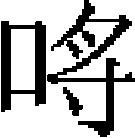

刑法志上
元之刑法，論者謂得之仁厚，失之縱弛，是不然。蒙古初入中原，百司裁決率依金律。至世祖，始取見行格例，頒之有司，爲《至元新格》。然帝臨時裁決，往往以意出入增減，不盡用格例也。其後挾私用譎之吏，夤緣放效，骫法自顓，是謂任意而不任法，非縱弛之過也。嗚乎！以世祖之仁明，成宗之寬恕，不能損益古今，權衡中外，以制一代之刑典。乃謂古今不必相沿，中外不必强同。其去整齊畫一之規，遠矣！今博采舊聞，爲《刑法志》，俾後之人有以推究其得失焉。
刑律上
太祖六年，敗金人於烏沙堡，得金降將郭寶玉。寶玉上言：「建國之初，宜頒新令。」帝從之。於是頒條畫五章，如「出軍不得妄殺，刑獄惟重罪處死，其餘雜犯量情笞決」是也。是爲一代制法之始。
及中原略定，州縣長吏生殺任情，甚至没人妻女。耶律楚材奏請：「囚當大辟，必待報。違者論死。」從之。
太宗即位，楚材又條便宜十八事，如：州縣非奉上令，敢擅行科差者，罪之。蒙古、回鶻、河西人，種地不納税者，死；監主自盜官物者，死；應犯死罪者，具由申奏待報，然後行刑，皆著爲令。
六年，帝在達蘭達巴之地，大會諸王、百官，頒條令曰：
凡當會不赴而私宴者，斬。
諸入宫禁，從者男女，以十人爲限。
軍中十人，置一甲長，聽其指揮，專擅者罪之。
其甲長以事來宫中，即置權攝一人、甲外一人，二人不得擅自往來，違者罪之。
諸公事非當言而言者，拳其耳；再犯，笞；三犯，杖；四犯，論死。
諸千户越萬户前行者，以木鏃射之；百户、甲長、諸軍有犯者，其罪同；不遵此法者，斥罷之。
諸人或居室，或在軍中，毋敢喧呼。
盜馬一、二匹者，即論死。
諸人馬不應絆於克

蘇嚕克内者，輒没與畜虎豹人。諸婦人製濟遜燕服不如法者，及妬者，乘以驏牛徇部中，論罪，即聚財爲更娶。
憲宗時，世祖在潛邸，駐蹕桓、撫二州，燕京斷事官伊囉斡齊與布智兒等，一日殺二十八人。其一人盜馬者，已杖而釋之，有獻環刀者，乃追還杖者，手試刃斬之。帝聞而責之曰：「凡死罪，當詳讞而後行刑。今一日殺二十八人，冤濫多矣！况已杖而復斬之，此何刑也？」布智兒慚懼不能對。
及即位，頒建元詔書，内一款：「凡犯罪至死者，如府州審問獄成，便行處斷，則死者不可復生，斷者不可復續。案牘繁冗，須臾斷決，萬一差誤，人命至重，悔將何及，朕實哀之。今後凡有死刑，仰所在有司推問得實，具情事始末及斷定招款，申宣撫司再行審復無疑，呈中書省奏聞，待報處決。」
中統四年，中書省奏准條畫：鞠、勘罪囚，仰達魯花赤、管民官一同研問，不得轉委通事、必闍赤人等推勘。婦人犯罪，有孕，應拷及決杖笞者，須候産後百日決遣；臨産者，召保聽候出産，二十日復追入獄，無保及犯死罪者，令婦人入禁省視。
五年，頒立中書省詔書，内一款：「諸州司縣，但有疑惑，不能決斷者，與隨即申解本路上司。若仍有疑惑不能決者，申部。犯死罪，枷、杻收禁，婦人去杻。杖罪以下鎖收。」又頒建都詔書，内一款：「失盜，勒令當該弓手立三限收捕。如限内不獲，其捕盜官，强盜停俸兩月，竊盜一月。外弓手如一月不獲强盜，的決一十七下，竊盜七下；兩月，强盜再決二十七下，竊盜一十七下；三月，强盜再決三十七下，竊盜二十七下。如限内獲賊及半者，全免本罪。」
至元八年，始禁用金《泰和律》。
十一年，禁用宋鞭背、黥面及諸濫刑。
十六年，御史中丞崔彧言：「憲曹無法可守，是以奸人無所顧忌。宜定律令，以爲一代之法。」命與御史大夫月吕魯那演議之。
二十三年，中書省臣言：「比奉旨：爲盜者毋釋。今竊盜數貫及佩刀微物，與童幼竊物者，悉令配役。臣等議：一犯者杖釋，再犯依法配役爲是。」帝曰：「朕以漢人徇私，用《泰和律》處斷，致盜賊滋衆，故有是言。人命至重，今後非詳讞者，勿輒殺人。」
二十七年，江淮行省平章政事沙不丁以倉庫官盜竊官糧，請依宋法黥面、斷其腕。帝曰：「此回回法也。」不聽。
是年，命中書參知政事何榮祖以公規、治民、禦盜、理財等十事，輯爲一書，名曰《至元新格》。二十八年，書成，勅刻板頒行，俾百司遵守。其刑律條件之可考者：
諸杖罪五十七以下，司縣斷決；八十七以下，散府、州、軍斷決；一百七以下，宣慰司、總管府斷決。
配流、死罪，依例勘審完備，申刑部待報，申札魯忽赤者亦同。
諸季報罪囚，當該上司，皆須詳視，但有淹滯，隨即舉行。
其各路推官，既使專理刑名，察獄有不平者，即聽推問明白，咨申本路改正。若推問已成，他司審理或有不實不盡，聽招狀問實待報。若犯人翻案，家屬稱冤，聽牒本路移推。其證驗已明者，不在移推之例。
諸見禁罪囚，各處正官每月分輪檢視。凡禁繫不究，淹滯不決，患病不治，並囚糧依時不給者，須隨時訊問，肅政廉訪司依上審察。
其京師獄囚，中書省、刑部、御史臺、札魯忽赤各須委問官一員審理。冤者辨明，遲者督催，釋者斷遣。
諸鞠問罪囚，必先參照元發事件，詳審研窮，並用證佐追究。若事情疑似，贓伏已明，而隱匿不招者，與連職官員同署依法拷問。其指告不明，無證佐可據者，須以理推尋，不得輒加拷掠。
諸行省、行院，凡於所屬，若管民官撫治不到，以致百姓逃亡，管軍官鎮守不嚴，以致盜賊滋興，須審其所由，依理究治。
諸行院到任，取會所管地方，見有草賊起數，嚴諭各處軍民官，各使鎮守有法，招捕得宜。仍將見有起數，先行報院。每季具已未招捕起數，咨院呈省施行。
諸草賊招捕，既平之後，仍須區處得宜，嚴責各管官司，毋令疏失。
諸捕盜官，如能巡警盡心，使境内盜息者爲上；雖有過失起數，而限内全獲者爲次。其因失盜，累經責罰，未獲數多者爲下。到選之日，考其實際，以定升降。
其江南現有草賊去處，若平治有法，另議聞奏升擢。
諸獄訟原告明白，易爲窮治。官司凡受詞狀，即須子細詳審。若指陳不明，及無證驗者，省會别具的實文狀，以憑勾問。其所告情事重大，應掩捕者不拘此例。
諸獄訟之繁，婚、田爲甚。其各處官司，宜使媒人通曉不應成婚之例，使牙人知買賣田宅違法之例，寫狀詞人知應告不應告之例，仍取管不違，甘給文狀，以塞起訟之源。
諸訴婚姻、家財、田宅、債負，若不係違法重事，並聽社長以理諭解，免使妨廢農務，煩擾官司。
諸詞訟，若證驗無疑，斷例明白，而官吏看詳，故有枉錯者，雖事已改正，其原斷情由，仍須究治。
諸官司聽訟事理，自始初究問，及中間施行，至末後歸結，另置簿朱銷。其肅政廉訪司專行照刷，無致淹滯。大致取一時所行事例，編爲條格而已，不比附舊律也。
三十一年，刑部尚書尚文以遠近禀決獄制不一，請依古律令以定憲章。不報。
元貞元年，御史臺臣言：「先朝決獄，隨罪輕重，笞杖異施，今止用杖，乞如舊制。」帝不允。
二年，命中書參知政事何榮祖等更定律令。帝諭榮祖曰：「律令，良法也。宜早定之。」對曰：「臣所擇者三百八十條，一條有該三四事者。」帝曰：「古今異宜，不必相沿，但取宜於今者。」
大德五年，詔：「凡獄囚禁，係累年疑不能決者，令廉訪司申省臺詳讞。」仍爲定例。
是年，定强竊盜條格：凡盜人孽畜者，取一償九。
七年，定諸改補鈔罪例：爲首者杖二百有七，從者減二等；再犯，從者杖與首同。
詔：凡爲匿名書，辭語重者誅之，輕者配流，皆没其妻子。
定大都南北兵馬司姦盜等罪，六十七以下付本路，七十七以上付也可札魯忽赤。
是年，諭中書省、樞密院、御史臺，内外大小衙門官吏軍民人等曰：「慶賞刑罰，國之大柄，二者不可偏廢。朕自即位以來，恪遵世祖成憲，優禮臣下，期於履正奉公，以稱朕懷，不務出此。若平章政事伯顔，暗都剌、右丞八都馬辛等，營私納賄，蒙蔽上下，以致政失其平，民受其弊。今已籍没家資，役戍邊遠，明正其罪。是用更張，以清庶務。以近年所定贓罪條例，互有重輕，特敕中書省集議，酌古準今，爲十二章。自今伊始，凡内外有官守者，其洗心滌慮，奉職忠勤，無俾吾民重困，式符委任責成之意。」
所謂十二章者，枉法五章，曰：一貫至十貫，四十七下；不滿貫者，量情決斷，依例除名。曰：十貫以上至二十貫，五十七下。曰：二十貫以上至三十七貫，七十七下。曰：三十貫以上至一百貫，八十七下。曰：二百貫以上，一百七下。不枉法七章：一貫至二十貫，笞四十七［一］，本等叙；不滿貫者，量情斷罪，解見任别行求仕。二十貫以上至五十貫，五十七下，注邊遠一任。五十貫以上至一百貫，六十七下，降一等。一百貫以上至一百五十貫，七十七下，降二等。一百五十貫以上至二百貫，八十七下，降三等。二百貫以上至三百貫，九十七下，降四等。三百貫以上，一百七下，除名不叙。
所謂枉法者，斷令有理：
一，受訖無理人錢物。
一，受訖有罪人錢物脱放。
一，受訖有罪人錢物，刑及無辜。
一，教令有罪人妄指平民，取受錢物。
一，違例賣官，及横差民户充倉庫官、祗待、頭目、鄉里正等，詐取錢物。
不枉法者：
一，饋獻率斂津助人情推收過割，因事索要勾事紙筆等錢，及倉庫院務搭帶分例關津批驗等錢。其事多端，不能盡舉。
一，與錢人本宗事無理或有罪，買囑官吏求勝脱免，雖已受贓，其事未曾枉法結絶，合從不枉法論，其贓物結没。
一，與錢人本宗事無理，或買囑官吏求勝脱免者，不論其事已未結絶及自首，俱合没官。
一，與錢人本宗事雖有理，用錢買囑官吏，要將對訟人凌虐重斷，不遂其意，告發到官，即係行賕，亦合没官。
一，營求勾當贓錢，及求仕人雖依理合用，當該官吏不曾刁蹬乞取行賕，疾早定奪，或不遂其意告發到官者。
一，騙脅科斂等錢，畸零不能給散，或不能盡見出錢，入花名隨事議設。
一，與錢人本宗事有理，官吏刁蹬取受，告發到官，合給主。
終元之世，科贓罪皆依十二章決罰，屢申明其制，以儆官吏焉。
八年，詔：「内郡、江南人，凡爲盜黥，三次者，謫戍遼陽；諸色人及高麗，三次，免黥，謫戍湖廣。」未幾，仍禁黥面法不用。
至大二年，皇太子言：「宣政院先奉旨：毆西僧者，截其手；詈者，斷其舌。此法昔所未聞，有乖國典，乞更其令。」從之。
是年，中書省臣言：「律令者，治國之急務，當以時損益。世祖有旨：金《泰和律》勿用，令老臣通法律者參酌古今，從新定制，至今尚未行。臣等謂：律令重布，未可輕議。請自世祖即位以來所行條格，校讐歸一，遵而行之。」未幾，尚書省臣又言：「國家地廣人衆，古所未有，累朝格例前後不一，執法之吏輕重任意。請自太祖以來所行政令九千餘條，删除繁冗，使歸於一。」並從之。於是刑律之出入牴牾者，始稍稍改正云。
仁宗即位，又命右丞相阿散，平章政事、商議中書省事劉正等，擇開國以來法制事例，彙集折衷，以示所司。其大綱有三：一曰詔制，二曰條格，三曰斷例。經緯於格例之間，非内外職守所急者，亦附載之，名曰别敕。延祐三年，書成，勅樞密院、御史臺、翰林國史、集賢院諸臣相與是正之。至治三年，又命樞密副使完顔納丹、侍御史曹伯啟、也可札魯忽赤普顔、集賢學士欽察、翰林直學士曹元用等，就前書而損益之，名曰《大元通制》。仍取延祐二年以後所未類者附著焉。
凡詔制爲條九十四，條格爲條一千一百五十有一，斷例爲條七百一十有七，令類五百七十有七，共二千五百三十九條。其類二十有一：曰名例，曰衛禁，曰職制，曰祭令，曰學規，曰軍律，曰户婚，曰食貨，曰十惡，曰姦非，曰盜賊，曰詐端，曰訴訟，曰鬬毆，曰殺傷，曰禁令，曰雜犯，曰捕亡，曰恤刑，曰平反，曰贖刑。
名例爲法之本。
一曰五刑：笞刑六，自七下至五十七，每十爲一等加減。杖刑五，自六十七至一百七，每十爲一等加減。徒刑五，徒一年，杖六十七；年半，杖七十七；二年，杖八十七；二年半，杖九十七；三年，杖二百七；每杖十及徒半年爲一等加減。流刑三，二千里比徒四年，二千五百里比徒四年半，三千里比徒五年。死刑二，斬、凌遲處死。
一曰五服：斬衰，三年，子爲父、婦爲夫之父之類。齊衰，有三年、杖期、不杖期、五月、三月之别，爲母、爲夫之父母之類。大功，有九月、殤七月之别，爲同堂兄弟、爲姑姊妹適人者之類。小功，五月，爲伯叔祖父母，爲再從兄弟之類。緦麻，三月，爲族兄弟、爲族曾父母之類。
一曰十惡：謀反，謂謀危社稷。謀大逆，謂毁宗廟山陵及宫闕。謀叛，謂背國從僞。惡逆，謂毆及謀殺祖父母、父母，殺伯叔父母、姑、兄、姊、外祖父母、夫［二］、夫之祖父母、父母者。不道，謂殺一家非死罪三人，及支解人、造畜蠱毒、魘魅者。大不敬，謂盜大祀神御之物、乘輿服物，盜及僞造御寶，合和御藥誤不如本方，及封題誤，若造御膳誤犯食忌，御幸舟船誤不牢固，指斥乘輿，及對捍制使而無人臣之禮者。不孝，謂告言詛詈祖父母、父母；及祖父母、父母在，别籍異財，若供養有闕；居父母喪，身自嫁娶，若作樂釋服從吉；聞祖父母、父母喪，匿不舉哀；詐稱祖父母、父母死者。不睦，謂謀殺及賣緦麻以上親，毆、告夫及大功以上親、小功尊屬。不義，謂殺本屬府主、刺史、縣令、見受業師，吏卒殺本部五品以上官長，及聞夫喪匿不舉哀，若作樂釋服從吉及改嫁者。内亂，謂姦小功以上親、父祖妾，及與和者。
一曰八議：議親，謂皇帝袒免以上親及太皇太后、皇太后緦麻以上親，皇后小功以上親。議故，謂故舊。議賢，謂有大德行。議能，謂有大才業。議功，謂有大功勳。議貴，謂職事官三品以上、散官二品以上及爵一品者。議勤，謂有大勤勞。議賓，謂承先代之後爲國賓者。
至獄具，則有枷、杻、鎖、鐐、杖五者之制。枷長五尺以上、六尺以下，闊一尺四寸以上、一尺六寸以下。杻長一尺六寸以上、二尺以下，闊三寸，厚一寸。鎖長八尺以上、一丈二尺以下。鐐連環重三斤。杖長三尺二寸，毋以筋膠裝釘。凡三等：笞杖，大頭徑二分七釐，小頭徑一分七釐；杖徒，大頭徑三分二釐，小頭徑二分二釐；訊杖，大頭徑五分五釐，小頭徑二分二釐。決訊者，並用小頭。
笞杖以七起數者：世祖建元以前，斷獄皆用成數，如匿税者笞五十，犯私盜者杖七十，私宰馬牛者杖一百，舊法猶有存者。大德中，刑部尚書王約言：「國朝用刑寬恕，笞杖十減其三，故笞一十減七。今之杖一百者，宜止九十七，不當又加十也。」議者憚於改正，其事遂寢。
至於死刑，有斬無絞，以絞、斬相去不至縣絶，且從降一等言之，斬之降即爲杖一百七籍流，猶有幸不至死之理焉。
延祐六年，更定諸盜例：
一，强盜持杖傷人，雖不得財，皆死。不傷人、不得財，斷一百七，徒三年。但得財，斷一百七，交出軍。二十貫，爲首者敲，爲從者一百七，出軍。不持杖傷人，造意、爲首、下手者敲。不曾傷人、不得財，斷八十七，徒二年。十貫以下，斷九十七，徒二年半。至二十貫，斷一百七，徒三年。至四十貫，爲首者敲，餘人斷一百七，出軍。
一，因盜而姦，同强盜傷人論，餘人依例斷罪。
一，兩次作賊者，敲。
一，初犯，偷盜駝、馬、牛，爲首者斷一百七，出軍；爲從斷九十七，徒三年。
一，盜驢騾，爲首者斷八十七，徒二年；爲從斷七十七，徒一年半。
一，盜羊豬，爲首者斷七十七，徒一年半；爲從斷七十七，徒一年。
一，盜財物，三百貫以上者，斷一百七，出軍。一百貫以上者，斷一百七，徒三年。自一百貫至四十貫，凡四等，其杖以十爲差，徒以半年爲差。十貫以上者，斷六十七，徒一年；以下者，六十七，斷放；爲從者，減一等斷配，以至元鈔爲則。已行不得財者，五十七；謀而未行者，四十七，斷放。
一，曾經出軍徒配再犯者，敲。
一，經斷放，十貫以下者，再犯，爲首者出軍，爲從徒三年。
一，籍記拘檢者，經五年不犯，聽保甲除籍。如能告及捕獲强盜者，一名減二年，二名除籍；竊盜，一名減一等，五名除籍。除籍後再犯，終身拘籍。
天曆二年，更定遷徙例。凡應徙者，驗所居遠近，移之千里；在途遇赦，皆得放還。如不悛再犯，徙於本省不毛之地；十年無過，則量移之。其人死，妻子聽歸原籍。著爲令。
元統元年，定婦人犯私鹽罪，著爲令。
後至元元年，中書員外郎陳思謙言：「强盜但傷事主者，皆得死罪。而故殺從而加功之人，與鬬而殺人者，例杖一百七下，得不死，與私宰牛馬之罪無異。是視人與牛馬等也，法應加重。因姦殺者，所姦妻妾同罪。律有明文。今止科姦罪，似失推明。」勅刑部改定，著爲令。
二年，詔：「强盜皆死；盜牛馬者劓；盜騾驢者鯨額，再犯劓；盜羊豕者墨項，再犯鯨，三犯劓，劓後再犯者死；盜諸物者，倍價償之。」著爲令。自大德以來，竊盜依例刺斷，祇鯨面而已，無劓法。元之末造，欲重懲盜竊，以遏亂源，至用古肉刑之法，然無救於亡也。
贖刑之例四：諸牧民官，公罪之輕者；諸職官，犯夜者；諸年老七十以上、年幼十五以下［三］，不任杖責者；諸罪人癃篤殘疾，不任杖責者。元貞元年，刑都議准，每杖笞一下，擬罰贖中統鈔一貫。
【校勘記】
［一］「笞四十七」，原作「四十貫」，據《元史》一〇二志第五十《刑法》改。
［二］「夫」，原脱，據《元史》卷一〇二志第五十《刑法》及《唐律疏議》卷三〇、《通典》卷一六五改。
［三］「年」，原作「者」，屬上讀，據《元史》卷一〇二志第五十《刑法》及王圻《續文獻通考》卷一七一《刑考》改。
本章完!